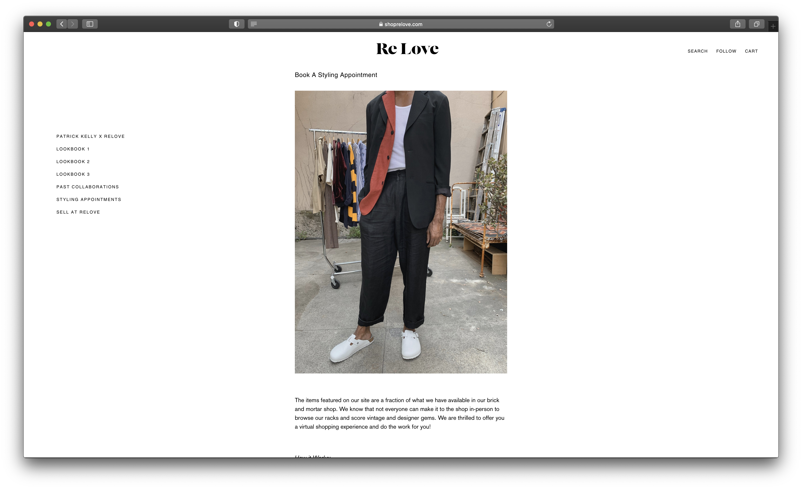
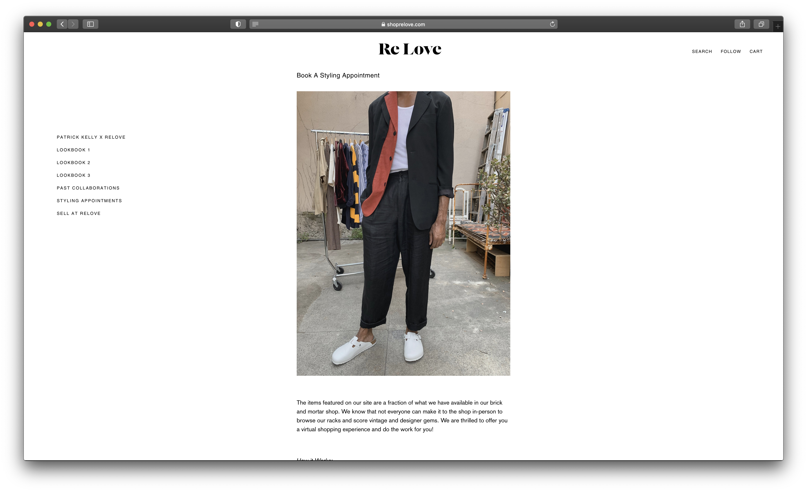
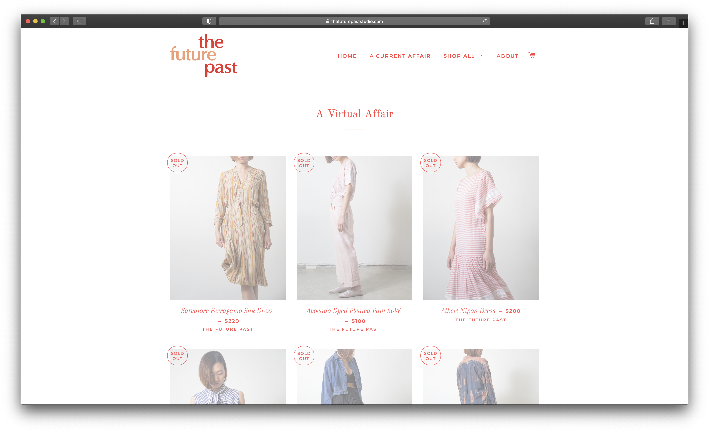
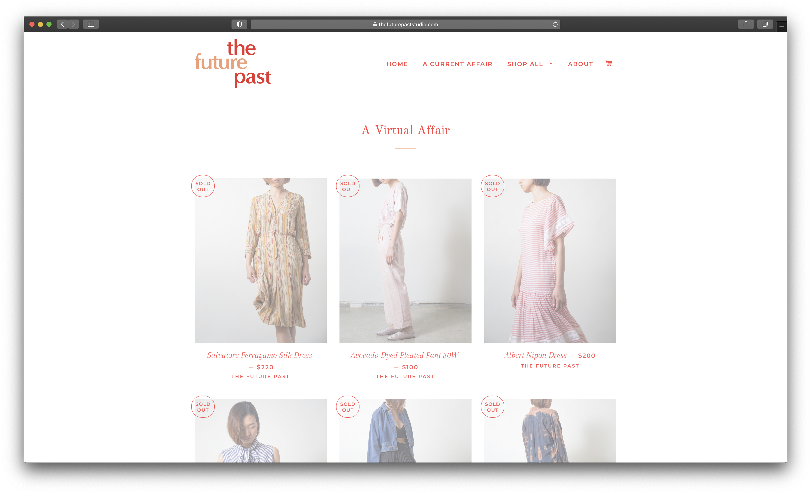

A Satellite Of Love is a locally-owned vintage clothing store and event space in San Luis Obispo, CA.
The shop is primarily involved in the vintage fashion and goods industry, it's involvement in music and cultural
events within San Luis Obispo lends its importance in the event venue industry.
Target audience
A Satellite Of Love is relatively niche within the SLO community, so any person invested in local arts and music,
as well as any person seeking vintage clothing and other goods would be aware of this shop and its associated site.
The current website for A Satellite Of Love currently hosts an events calendar highlighting upcoming events within the space.
As their online store is still being developed, site visitors likely use it for event and contact purposes.
We're an independent retail shop with vintage clothing, new and used books and records, and locally crafted goods.
A view inside the shop.
Upcoming Events
We are excited to be hosting a variety of musicians and authors in 2022.
Bookshelves stocked with a selection of books and other trinkets.
New Products
The capsule items we feature on our site comprise a small portion of what is available in our shop. However, we are dedicated to offering
an accessible shopping experience, and try to provide a virtual variety of items to consider.
Wooden shelves hosting a selection of shoes, belts, and other accessories.
Main Collection
Shop clothing, accessories, books, records, and other items we have in stock!
Naturally Died Silk Dress
Local Artist
$100
Wrangler Reworked Denim
26 Waist
$225
Silk Dress
$200
Vintage 80's Suit
$165
Books
The Trial (Der Prozess)
Frank Kafka
$30
Franny and Zooey
J. D. Salinger
$25
The Sirens of Titan
Kurt Vonnegut
$25
Henri Matisse: The Cut-outs
MoMA
$37
Location
Please reach out to us with any inquiries!
An outside view of the shop, including the nearby parking lot, plants, and bike rack.


 

 
